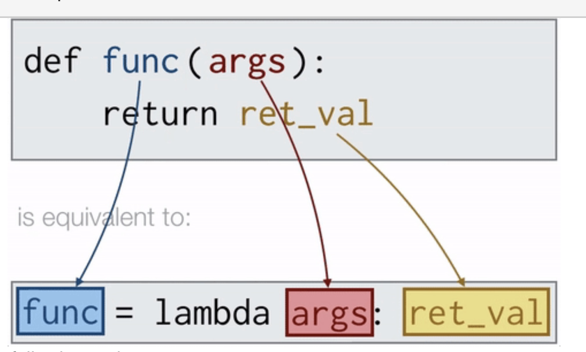

Methods¶
Unpacking¶
| Concept | Description | Example | Details |
|---|---|---|---|
Unpacking List(*) |
Unpacks elements of a list or tuple into positional arguments when calling a function. | function(*my_list) |
Passes each element of the sequence as an individual argument. Note that the list/tuple/dict element size should be the same as the number of arguments of the function, otherwise, it will raise TypeError |
Unpacking Dictionary(**) |
Unpacks key-value pairs of a dictionary into named keyword arguments. | my_dict = {"key__1": value_1, "key__2": value_2}function(**my_dict) |
Matches dictionary keys to function parameter, and pass the values, seperate conceptually with equal signs function(my_dict[key_1], my_dict[key_2]) |
Placeholder *args and **kwargs¶
To tell our functions to expect a presently unknown variadic number of positional arguments / keyword arguments. *args and **kwargs can be named differently, e.g., *objects
| Concept | Description | Syntax |
|---|---|---|
*args Parameter (can be called with different names) |
Could take an arbitrary number of positional arguments(from left to right) into a tuple, i.e., args = (value_1, value_2, value_3) |
def f(*args): f(value_1, value_2, value_3) |
**kwargs Parameter |
Could take an arbitrary number of keyword arguments (can be called optionally and individually by its own name) into a dictionary, i.e., kwargs = {arg_1 : value_1, arg_2 : value_2, arg_3 : value_3} |
def f(**kwargs):f(arg_1 = value_1, arg_2 = value_2, arg_3 = value_3) |
Scope¶
global vs. Local Variables¶
Note: OOP classes are preferred over global variables.
The rule of thumb: Use global variables sparingly.
| Feature | Local Variable | Global Variable |
|---|---|---|
| Where defined | Inside a function | Outside all functions (at the top) |
| Scope (Access) | Only inside that function | Anywhere in the module |
| Lifetime | Exists only while function runs | Exists for the entire program execution |
| Modification | Assign directly var = 10 |
Requires global keyword to tell each function that var does not refer to a local variable: instead, it refers to the global variable we originally placed at the top of our code. global var var = 10 |
Note: Do not have a local variable that has the same name as any global variable.
variables¶
Constant Variable¶
Constant variable are intended to remain unchangeable throughout program execution, typically denoted by all capital variable names and are placed at the top of our code.
Note:
Python does not enforce constant immutability like other languages, we can only name it in ALL_CAPS to indicate "Do not change it", i.e., Python actually has no mechanism to prevent us from changing that value.
Class constants are defined within class but outside of any particular class method and can be accessed via ClassName.CONSTANT
Lambda Function¶
| Feature | Regular Function | Lambda Function (alternative way for creating a simple function) |
|---|---|---|
| When to use | General purpose, especially when for complex expressions and reusable functions | When an anonymous simple, temporary function is needed immediately, not intended to be reused multiple times, such as when using inline operations, as arguments to higher-order functions (map, filter, sorted) |
| Syntax | def fn_name(arguments): block of codereturn expression_or_var |
lambda arguments: expression |
| Syntax details | Starts with def keyword followed by the function name, arguments, and a block of code for multiple expressions, optionally explicit return statement. |
Starts with lambda keyword followed by parameters, a colon, and a single expression.* arguments: A comma-separated list of parameters * expression: A single expression that is evaluated and returned automatically. |
| Example | def add(x, y): return x + y |
lambda x, y: x + y |
| Scope of Variables | Can define local variables for use within the function. | Cannot define new variables; can only use function arguments and existing variables. |
Figure: Regular Function vs Lambda Function

Code Quality & Documentation¶
Check Type Hints Using mypy¶
In other programming languages, one expresses explicitly what variable type one wants to use, however, Python does not require the explicit declaration of types. Nevertheless, it’s good practice to ensure all of your variables are of the right type.
pip install mypymypy file_name.py
| Concept | Purpose | Syntax | + |
|---|---|---|---|
| Type Hints | Annotates the expected types for arguments, variable and return values for static analysis. | def function(argument: arg_type) -> return_type:variable: var_type = value return return_var |
Improves code readability and allows type checkers to catch errors before runtime. |
Docstrings¶
Standardized multiline comments placed inside functions to document function behavior / features within triple quotes """.
Document fields (:param, :return, etc.) can be parsed by tools such as Sphinx, to parse docstrings and automatically create documentation in the form of web pages and PDF files such that you can publish and share with others.
def function_name(argument: arg_type) -> return_type:
"""
One-sentence explanation of the function.
:param argument: description
type argument: arg_type
:raise ErrorType: If statement
:return: description
rtype: return_type
"""